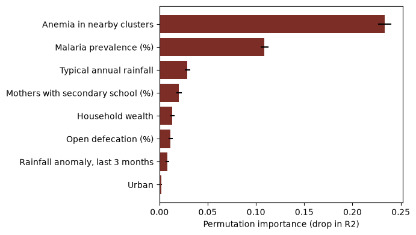
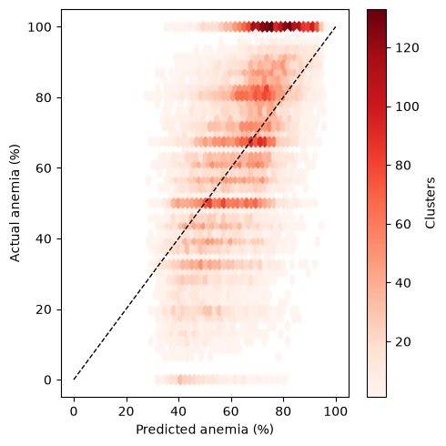

import numpy as np
import pandas as pd
from sklearn.ensemble import RandomForestRegressor
from sklearn.inspection import permutation_importance
from sklearn.linear_model import LinearRegression
from sklearn.metrics import mean_absolute_error, r2_score
from sklearn.model_selection import GridSearchCV, KFold, train_test_split
from sklearn.neighbors import BallTree
from sklearn.pipeline import make_pipeline
from sklearn.preprocessing import StandardScaler
from config import PRIVATE, PUBLICStep 5. Predict cluster anemia prevalence: linear regression vs random forest.
- Features: open defecation, malaria, rainfall anomaly, long-term rainfall, wealth, maternal education, urban, and a spatial lag (average anemia of the 10 nearest training clusters, so the test set never leaks into features).
- 80/20 train/test split, 5-fold cross-validation, grid search for the forest.
- Out-of-fold predictions for every cluster -> where does the model miss?
Input : data/private/clusters_profiles.parquet Output: data/private/clusters_final.parquet (private) data/public/model_scores.csv, feature_importance.csv (public)
Run on the author’s computer. The DHS data are private, so the outputs shown here are summaries only (no cluster locations or survey records).
BASE_FEATURES = ["od_pct", "pfpr", "rain_3mo_z", "rain_annual_mm", "wealth",
"mom_secondary_pct", "urban"]
LABELS = {"od_pct": "Open defecation (%)", "pfpr": "Malaria prevalence (%)",
"rain_3mo_z": "Rainfall anomaly, last 3 months", "rain_annual_mm": "Typical annual rainfall",
"wealth": "Household wealth", "mom_secondary_pct": "Mothers with secondary school (%)",
"urban": "Urban", "spatial_lag": "Anemia in nearby clusters"}
K_NEIGHBORS = 10
y_col = "anemia_pct"cl = pd.read_parquet(PRIVATE / "clusters_profiles.parquet")
cl = cl.dropna(subset=BASE_FEATURES + [y_col]).reset_index(drop=True)
print(f"{len(cl):,} clusters with complete features")21,661 clusters with complete featuresdef spatial_lag(train_idx, target_idx, k=K_NEIGHBORS):
"""Mean anemia of the k nearest training clusters (excluding the cluster itself)."""
tr = cl.loc[train_idx]
tree = BallTree(np.radians(tr[["lat", "lon"]].to_numpy()), metric="haversine")
dist, ind = tree.query(np.radians(cl.loc[target_idx, ["lat", "lon"]].to_numpy()), k=k + 1)
tr_ids = tr.index.to_numpy()[ind] # (n, k+1) training-cluster ids
vals = tr[y_col].to_numpy()[ind]
self_hit = tr_ids == np.asarray(target_idx)[:, None]
vals = np.where(self_hit, np.nan, vals)
# keep the first k non-self neighbours
return np.array([row[~np.isnan(row)][:k].mean() for row in vals])FEATURES = BASE_FEATURES + ["spatial_lag"]def make_xy(train_idx, test_idx):
Xtr = cl.loc[train_idx, BASE_FEATURES].copy(); Xtr["spatial_lag"] = spatial_lag(train_idx, train_idx)
Xte = cl.loc[test_idx, BASE_FEATURES].copy(); Xte["spatial_lag"] = spatial_lag(train_idx, test_idx)
return Xtr, cl.loc[train_idx, y_col], Xte, cl.loc[test_idx, y_col]train_idx, test_idx = train_test_split(cl.index, test_size=0.2, random_state=42)
Xtr, ytr, Xte, yte = make_xy(train_idx, test_idx)cv = KFold(5, shuffle=True, random_state=0)
grid = GridSearchCV(
RandomForestRegressor(random_state=0, n_jobs=-1),
{"n_estimators": [300], "max_depth": [10, 20, None], "min_samples_leaf": [5, 20],
"max_features": [0.33, 0.66]},
cv=cv, scoring="r2", n_jobs=1)def cv_r2(make_model, feats):
"""Average R2 across the 5 cross-validation folds of the training set."""
return np.mean([r2_score(ytr.iloc[v], make_model().fit(Xtr[feats].iloc[t], ytr.iloc[t])
.predict(Xtr[feats].iloc[v])) for t, v in cv.split(Xtr)])grid.fit(Xtr[FEATURES], ytr) # grid search with 5-fold CV
best = {k: v for k, v in grid.best_params_.items()}
make_linear = lambda: make_pipeline(StandardScaler(), LinearRegression())
make_rf = lambda: RandomForestRegressor(random_state=0, n_jobs=-1, **best)rows = []
for name, make_model, feats in [("Linear regression", make_linear, FEATURES),
("Random forest", make_rf, FEATURES),
("Random forest (no spatial lag)", make_rf, BASE_FEATURES)]:
model = make_model().fit(Xtr[feats], ytr)
pred = model.predict(Xte[feats])
rows.append({"model": name, "cv_r2": cv_r2(make_model, feats), "test_r2": r2_score(yte, pred),
"test_mae": mean_absolute_error(yte, pred)})
print(rows[-1])
if name == "Linear regression":
linear = model
print("Best forest:", grid.best_params_)
scores = pd.DataFrame(rows)
scores.round(3).to_csv(PUBLIC / "model_scores.csv", index=False){'model': 'Linear regression', 'cv_r2': np.float64(0.30907691007476396), 'test_r2': 0.3196155217540788, 'test_mae': 16.00363497173131}
{'model': 'Random forest', 'cv_r2': np.float64(0.3403008735177515), 'test_r2': 0.3476153217688027, 'test_mae': 15.64994623995741}
{'model': 'Random forest (no spatial lag)', 'cv_r2': np.float64(0.28977509600260265), 'test_r2': 0.3086446326017912, 'test_mae': 16.160765546924438}
Best forest: {'max_depth': None, 'max_features': 0.33, 'min_samples_leaf': 5, 'n_estimators': 300}Which factors matter? (permutation importance on the test set)
rf = grid.best_estimator_
imp = permutation_importance(rf, Xte[FEATURES], yte, n_repeats=10, random_state=0, n_jobs=-1)
lin_coef = linear.named_steps["linearregression"].coef_
fi = pd.DataFrame({"feature": FEATURES, "label": [LABELS[f] for f in FEATURES],
"rf_importance": imp.importances_mean, "rf_importance_sd": imp.importances_std,
"linear_std_coef": lin_coef})
fi.sort_values("rf_importance", ascending=False).round(4).to_csv(PUBLIC / "feature_importance.csv", index=False)
print(fi.sort_values("rf_importance", ascending=False).round(3).to_string(index=False)) feature label rf_importance rf_importance_sd linear_std_coef
spatial_lag Anemia in nearby clusters 0.233 0.007 10.208
pfpr Malaria prevalence (%) 0.109 0.004 3.394
rain_annual_mm Typical annual rainfall 0.029 0.003 -0.359
mom_secondary_pct Mothers with secondary school (%) 0.020 0.003 -1.385
wealth Household wealth 0.013 0.002 -2.043
od_pct Open defecation (%) 0.012 0.002 0.705
rain_3mo_z Rainfall anomaly, last 3 months 0.008 0.002 -0.032
urban Urban 0.002 0.000 0.675Out-of-fold predictions for every cluster (for the error map)
cl["pred_rf"] = np.nan
cl["pred_linear"] = np.nan
for t, v in KFold(5, shuffle=True, random_state=1).split(cl):
Xa, ya, Xb, _ = make_xy(cl.index[t], cl.index[v])
cl.loc[cl.index[v], "pred_rf"] = make_rf().fit(Xa, ya).predict(Xb)
cl.loc[cl.index[v], "pred_linear"] = make_linear().fit(Xa, ya).predict(Xb)
cl["resid_rf"] = cl[y_col] - cl.pred_rf # + = model under-predicts anemia
cl["abs_err_rf"] = cl.resid_rf.abs()
print("Out-of-fold R2 (rf / linear):", round(r2_score(cl[y_col], cl.pred_rf), 3),
round(r2_score(cl[y_col], cl.pred_linear), 3))Out-of-fold R2 (rf / linear): 0.34 0.311cl.to_parquet(PRIVATE / "clusters_final.parquet", index=False)Feature importance
import matplotlib.pyplot as plt
f = fi.sort_values("rf_importance")
plt.figure(figsize=(7, 4))
plt.barh(f.label, f.rf_importance, xerr=f.rf_importance_sd, color="#7b2d26")
plt.xlabel("Permutation importance (drop in R2)"); plt.tight_layout(); plt.show()
Predicted vs actual (out-of-fold)
plt.figure(figsize=(5, 5))
plt.hexbin(cl.pred_rf, cl[y_col], gridsize=40, cmap="Reds", mincnt=1)
plt.plot([0, 100], [0, 100], "k--", lw=1)
plt.xlabel("Predicted anemia (%)"); plt.ylabel("Actual anemia (%)")
plt.colorbar(label="Clusters"); plt.tight_layout(); plt.show()